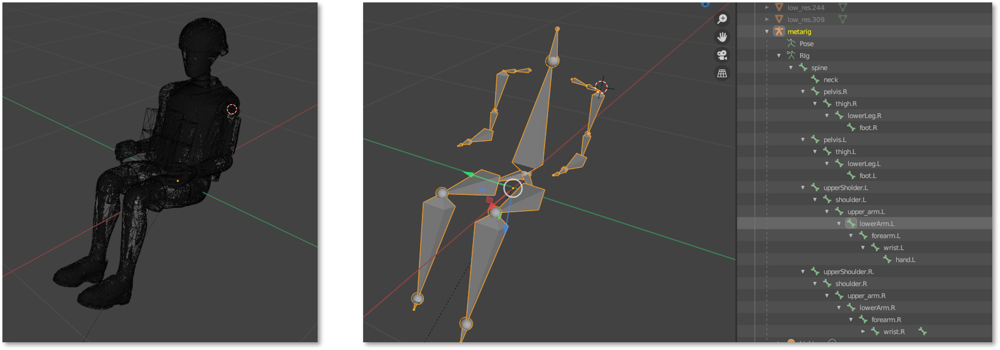

ATD Armature:
I rigged a comprehensive ATD mockup based on LS PrePost Nodes, ensuring the correct hierarchy and constraints.
Bone Higlight System:
I implemented a ray-casting system combined with custom depth materials to intuitively highlight the selected bones for the user.
IK Implementation:
I integrated Unreal's Two Bone IK for leg movements to address two-bone rotational limits, and the CCDIK feature for arm movements to cater to rotations across multiple bones. This resulted in realistic human movement and positioning. (Using Anim BP)
ATD Tool Test:
Initial testing of the positioning tool's functionality was conducted, utilizing communication between pawn and animation blueprints via state machines.